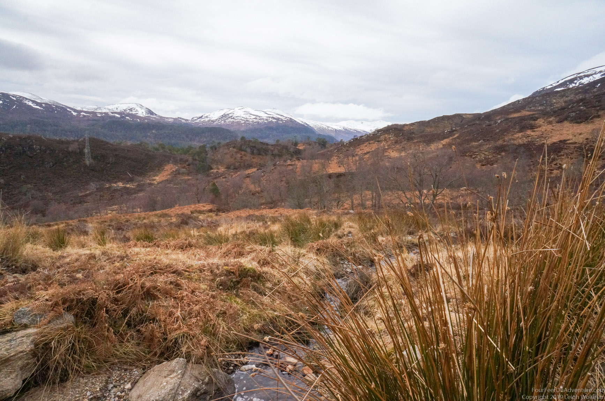
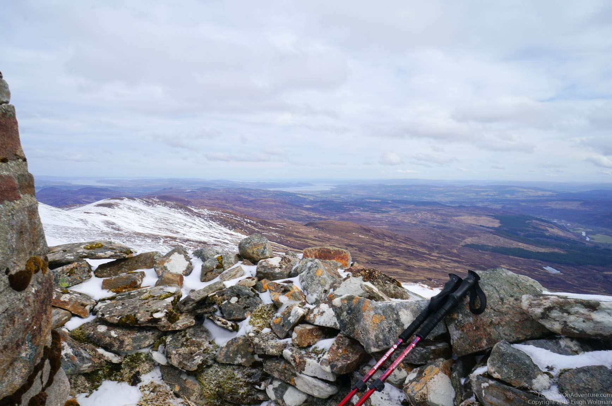
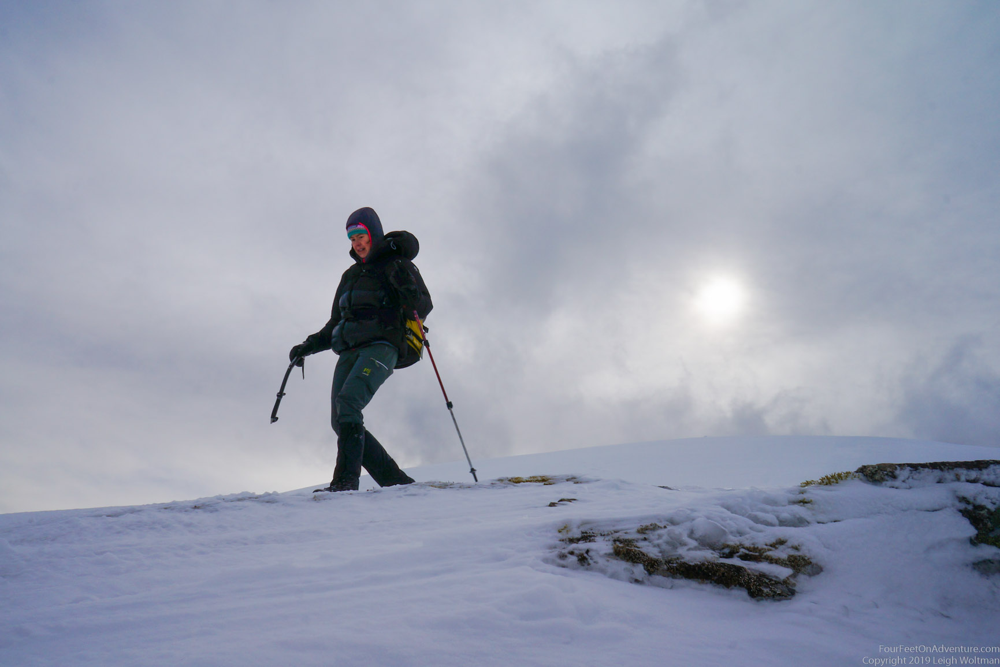
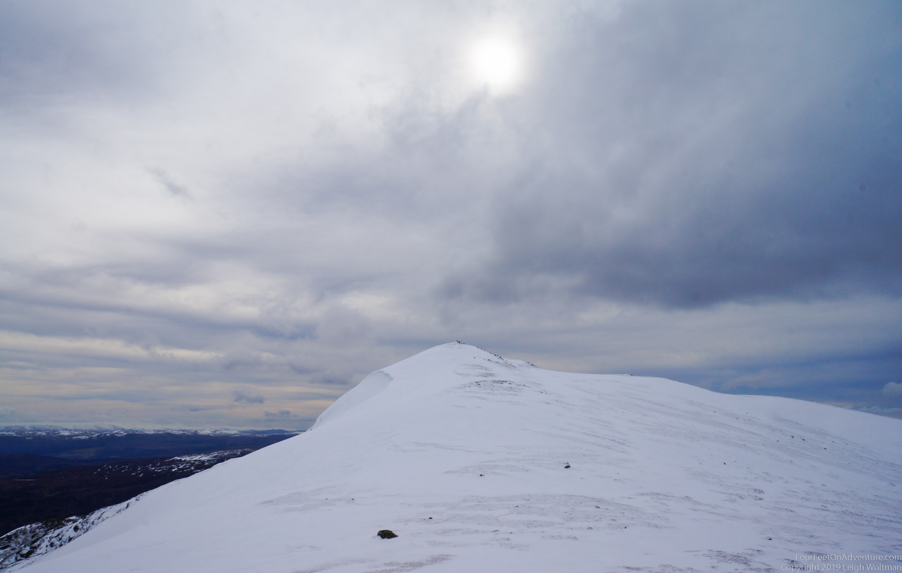
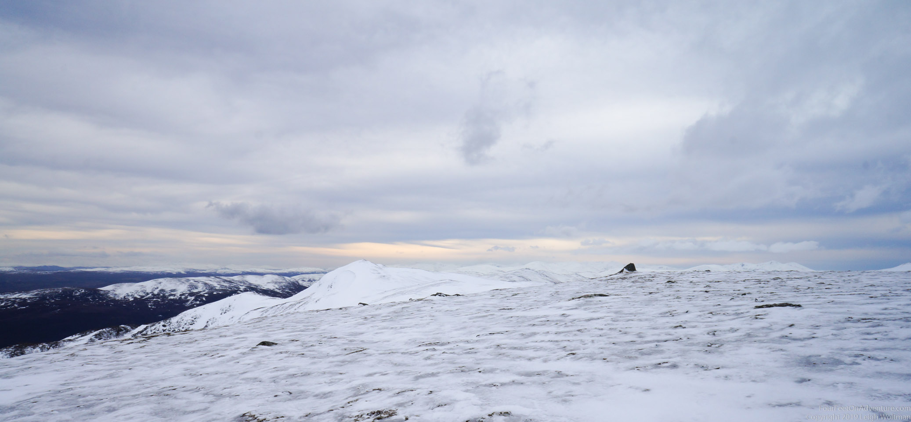

Please don’t ask me how to pronounce this, but after endless discussions and looking on the map, we figured we knew which mountain is the one we see from our windows, right behind the bridge over the Black Isle. As it still had a beautiful cap of snow and was described as being soggy, and in addition we were going to have a day of cloud free hills, this seemed the perfect time to go stand on it to look back to our house.
At the car park near the start of our route, someone made a treehouse with real fairies! That distracted me so much that unfortunately I left the big lense of our camera in the car. Plan to take a picture of the car gone, though we realized this after 3 hours and 800 meters up. So now we have to go up another time to take a better picture of our house.
Also interesting to note, the car park was at a dam, and the water came out a tunnel. Most Scottish water schemes that we have seen have big pipes or even open canals through the hills, so this was quite different. After a bit of googling later, we found out that the Affric-Beauly hydro electric water scheme is quite extensive with several tunnels involved.
We followed the road into Strathfarrar for a bit, before going up into the hills, following a river. At some point we had to leave the trail to continue steeper up-hill, which was very soggy after the recent snow melt, until we hit the snow and we could walk up more comfortably on, like Leigh put it, perfect boot snow.

The view at the top was amazing. All the snowy tops to the west of us were a treat for the eye. But also the East didn’t disappoint. This hill is really the last larger one on the east, so you could see all the way into the Murray and Cromarty firths, all the way passed Fort George. Almost to Norway, but not quite! While enjoying the view, the weather had turned into a typical summit gale, which left us quite cold.




We continued in the direction of home, following the horseshoe shaped mountain which had a few smaller peaks on the way before going down. Most of the snowy slopes were ending in a bit of a saddle. So while keeping our own safety into account, but also Mountain Rescue who asked to do nothing stupid in these covid-19 times, we but-glided down some slopes, using our axes to break if needed. Unfortunately the snow didn’t reach all the way down (remind me to next time up here only go when it’s properly snowy) which left us with a no-trail soggy marsh-bush ankle-twisting down stumble, which is actually somewhat of a normal hiking experience. In the end we found something that vaguely resembled a trail, and followed it back to the car.
Quite the walk, but definitely worth the view.